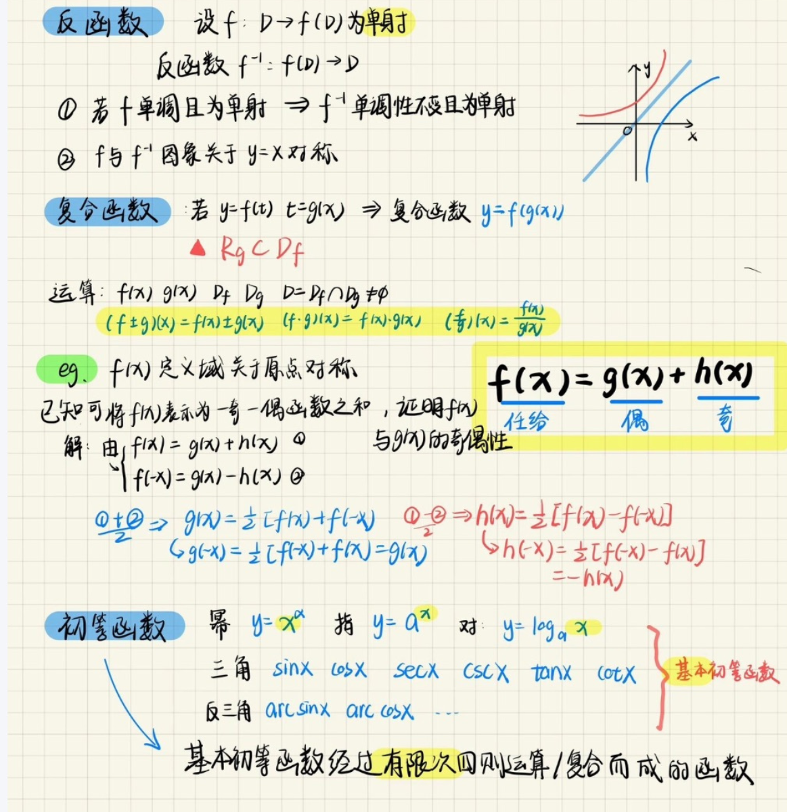

<style>
body {
  font-family: 'Microsoft YaHei', Arial, sans-serif;
  background: #f7f7f7;
  margin: 0;
  padding: 0;
}
section {
  background: #fff;
  margin: 30px auto;
  padding: 24px 32px;
  border-radius: 12px;
  box-shadow: 0 2px 8px rgba(0,0,0,0.08);
  max-width: 800px;
}
h2 {
  color: #2c3e50;
  border-left: 6px solid #3498db;
  padding-left: 12px;
  margin-bottom: 18px;
}
ul {
  margin: 0 0 0 24px;
  padding: 0;
}
li {
  margin-bottom: 8px;
  line-height: 1.7;
}
.img-box {
  text-align: center;
  margin: 18px 0;
}
</style>

<!-- 教学内容（顶部） -->
<section id="content">
  <h2>教学内容</h2>
  <ul>
    <li><strong>高等数学</strong></li>
    <li><strong>经济应用数学</strong></li>
    <li>这里填写教学内容...</li>
  </ul>
</section>

<!-- 教学资源（中部） -->
<section id="resources">
  <h2>教学资源</h2>
  <ul>
    <li>这里填写教学资源...</li>
  </ul>
</section>

<!-- 作业要求（底部） -->
<section id="requirements">
  <h2>作业、考试要求与纪律</h2>
  <ul>
    <li>笔记按照下图为标准，注意排版和符号，用不同颜色的笔标出重点</li>
    <li>每次下课前记录5个问题</li>
  </ul>
  <div class="img-box">
    
    <div style="margin-top:24px; text-align:left;">
      <ul style="background:#f9f9f9; border-radius:8px; padding:16px 24px; box-shadow:0 1px 4px rgba(0,0,0,0.05);">
        <li><strong>平日违反纪律上课说话处理流程：</strong></li>
        <li>第一次：警告</li>
        <li>第二次：记名批评</li>
        <li>第三次：通报导员与其他负责老师</li>
        <li>第四次：直接扣完平时成绩</li>
      </ul>
    </div>
  </div>
</section>
